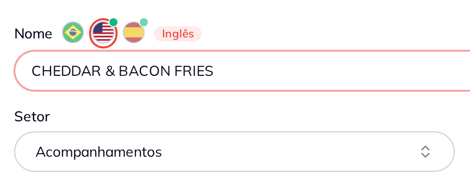

Cada item guarda o nome e a descrição nos três idiomas. Você escreve dentro do produto que já existe, e o turista lê exatamente o que você quis dizer.

O mesmo texto serve o tablet, o totem e o cardápio por QR Code.